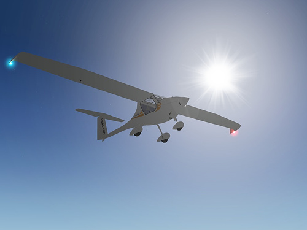

General Aviation Technology Challenge
August is a busy month for competition fans, what with the Beijing Olympics just wrapping up, the US Open Tennis Championship about to start, numerous motor racing events, such as Formula 1 Grand Prix, and the 2008 General Aviation Technology (GAT) Challenge. OK, so maybe the GAT Challenge isn't quite in the same league as those other competitions, but with US$300,000 up for grabs, it's a serious competition intended to stimulate innovation in the personal air vehicle (PAV) arena.
 2008 CAFE 400 Start LineupImage courtesy of Pipistrel
2008 CAFE 400 Start LineupImage courtesy of Pipistrel
The 2008 GAT Challenge was held August 2-10, 2008 and is the successor to the Personal Air Vehicle (PAV) Challenge held in 2007. The competition attracts Light Sport Aircraft (LSA); minimum competition requirements exclude more exotic flying cars and jetpacks. NASA again provided the prize money as part of its Centennial Challenges and the Comparative Aircraft Flight Efficiency (CAFE) Foundation hosted the event. The competition awards prizes according to 4 main categories.
-
CAFE 400 Prize
The CAFE 400 race is the feature event of the GAT Challenge and consists of a 400 mile circuit around Northern California. Each aircraft in the competition is assigned a time handicap, known as the Ground Travel Time (GTT), according to its takeoff distance, and then attempts to complete the circuit in the fastest time. Maximizing the power to weight ratio of an aircraft is an essential feature of potential prize winners.
-
Green Prize
The Green Prize is awarded to the aircraft in the CAFE 400 that achieves the highest Miles per Gallon of Gasoline Equivalent (MPGe), but with a minimum requirement that it exceeds 30 MPGe and averages at least 100 mph. Alternative fuels, such as bio-fuel, and power sources, such as electricity, are encouraged. Aerodynamic efficiency (lift to drag ratio) and weight minimization are essential ingredients to be a contender for the Green Prize.
-
Community Noise Prize
The community noise prize is awarded to the quietest aircraft, measured during takeoff and a high-speed flyover. The minimum standards for the prize are a noise level of less than 64 dBA and a minimum high-speed flyover of 120 mph.
-
Aviation Safety Prize
The safety prize is awarded to the aircraft that demonstrates the best handling characteristics, such as spiral stability, maneuvering stability, static longitudinal stability, slow flight, control harmony and roll rate. Advanced, innovative electronic pilot aids are encouraged.
Results
Only 4 aircraft took part in the 2008 GAT Challenge, with only 3 getting airborne. Sweeping most of the categories (as in 2007) was a modified Pipistrel Virus 912 SW. The heavy bias of the competition towards short takeoff capability played into the hands of the light-weight Pipistrel. Less prize money was claimed in 2008 than 2007.
Pipistrel VirusLicense: CC BY-ND 2.0, Nicholas Volodimer
The favorite for the Green Prize was a bio-diesel fueled Diamond Katana DA20-A1 aircraft that unfortunately had engine problems and didn't make it off the ground. None of the other aircraft in the CAFE 400 met the minimum requirements for the Green Prize.
Future Competitions
To stimulate more competition, in 2009 NASA is upping the total prize money to US$400,000. The emphasis is also likely to shift towards fuel efficiency. The hope is that electric-powered aircraft may make an appearance after the recent enthusiastic reception for the 2nd Annual Electric Aircraft Symposium, also hosted by the CAFE Foundation.
Feedback
Questions? Ideas? Problems?

Recent blog posts
- CFD Simulates Distant Past
- Background on the Caedium v6.0 Release
- Long-Necked Dinosaurs Succumb To CFD
- CFD Provides Insight Into Mystery Fossils
- Wind Turbine Design According to Insects
- Runners Discover Drafting
- Wind Tunnel and CFD Reveal Best Cycling Tuck
- Active Aerodynamics on the Lamborghini Huracán Performante
- Fluidic Logic
- Stonehenge Vortex Revealed as April Fools' Day Distortion Field
 Get our Blog feed
Get our Blog feed